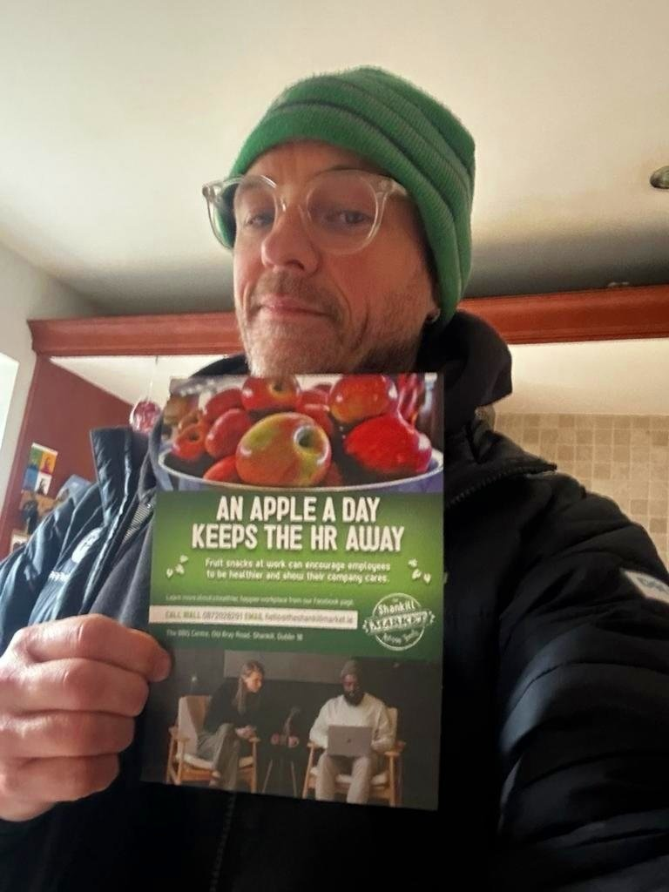

The Shankill Market
Project
Client — written & designed

- Client
- The Shankill Market, Co. Dublin
- Discipline
- Print & outdoor, Digital & social, Brand & web
- Sector
- Consumer, Pharma & health
A5 flyers I wrote and designed for my new account, The Shankill Market outside Dublin city centre, promoting their office fruit delivery.
A4 flyers in-store to encourage customers to get their holiday vegetable orders in early.
Meta ads to continue your “Summer Holidays” wellness habits after summer is gone, going into winter. Plus an OOH Summer Holidays wellness campaign.
And a happy client pic: me, the new employee, at The Shankill Market, County Dublin.